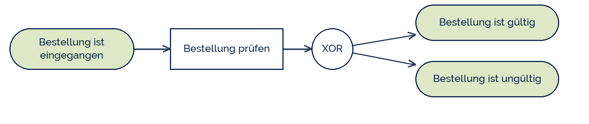

shogun
shogun
Good morning!
Nur das Schöne wird die Welt retten!
Fjodor Dostojewski
Nicht verzagen, Doc Alvers fragen!
Informatik — Grundkurs 12
Die Ereignisprozesskette
eEPK: Ereignisse, Funktionen und die drei Konnektoren
Nicht verzagen, Doc Alvers fragen!
Kapitel 01
Die Bausteine
Zwei Knotenarten im Wechsel
Nicht verzagen, Doc Alvers fragen!
Die Elemente der eEPK
| Element | Form | bedeutet | Beispiel |
|---|---|---|---|
| Ereignis | Sechseck | ein Zustand ist eingetreten | Bestellung ist eingegangen |
| Funktion | abgerundetes Rechteck | eine Tätigkeit wird ausgeführt | Bestellung prüfen |
| Konnektor | Kreis mit Zeichen | Verzweigung oder Zusammenführung | XOR, UND, ODER |
| Organisation | Ellipse am Rand | wer führt aus? | Vertrieb |
| Information | Rechteck am Rand | welche Daten fließen? | Kundendatei |
Ereignis und Funktion wechseln sich immer ab — nie zwei gleiche hintereinander
Die letzten beiden Zeilen machen aus der EPK die erweiterte EPK
Nicht verzagen, Doc Alvers fragen!
Eine kleine eEPK
Der XOR-Konnektor heißt: genau einer der beiden Wege wird genommen
Nach einer Funktion darf verzweigt werden — nach einem Ereignis nicht mit XOR
Die Skizze zeichnet vereinfacht: im Original ist das Ereignis ein Sechseck, die Funktion ein abgerundetes Rechteck

Nicht verzagen, Doc Alvers fragen!
Kapitel 02
Die Konnektoren
XOR, UND, ODER — und ihre Regeln
Nicht verzagen, Doc Alvers fragen!
Was die drei Konnektoren bedeuten
| Konnektor | beim Verzweigen | beim Zusammenführen |
|---|---|---|
| XOR | genau ein Weg wird genommen | genau ein Weg kommt an |
| UND | alle Wege werden genommen | auf alle Wege wird gewartet |
| ODER | mindestens einer, auch mehrere | auf die gestarteten wird gewartet |
Jede Verzweigung braucht eine passende Zusammenführung — mit demselben Konnektor
Ein UND-Split mit XOR-Join ist ein Modellierungsfehler: der Prozess bleibt hängen
Nicht verzagen, Doc Alvers fragen!
Die Regeln, an denen die meisten scheitern
Die eEPK beginnt und endet mit einem Ereignis — immer
Ereignis und Funktion wechseln sich ab, ohne Ausnahme
Ein Ereignis trifft keine Entscheidung — deshalb nach einem Ereignis kein XOR-Split
Entscheidungen fallen in Funktionen: dort steht das XOR danach
Jeder Weg, der aufgeht, muss auch wieder zusammenkommen oder ordentlich enden
Nicht verzagen, Doc Alvers fragen!
Kapitel 03
Lesen und prüfen
Ein Modell mit Fehlern
Nicht verzagen, Doc Alvers fragen!
Fünf typische Fehler
| Fehler | warum er einer ist |
|---|---|
| Zwei Funktionen hintereinander | das Ereignis dazwischen fehlt |
| XOR direkt nach einem Ereignis | ein Ereignis entscheidet nichts |
| Split mit UND, Join mit XOR | der Prozess wartet ewig oder verdoppelt sich |
| Prozess endet mitten im Ablauf | jedes Ende ist ein Ereignis |
| Funktionen ohne Verantwortlichen | in der eEPK gehört die Rolle daneben |
Prüft ein fremdes Modell immer in dieser Reihenfolge: Wechsel, Konnektoren, Anfang und Ende
Nicht verzagen, Doc Alvers fragen!
Ereignis, Funktion, Ereignis — im Wechsel. Und was mit UND aufgeht, muss mit UND wieder zusammenkommen.
Merksatz
Nicht verzagen, Doc Alvers fragen!
Fun Facts: eEPK
Die EPK entstand 1992 am Institut für Wirtschaftsinformatik in Saarbrücken bei A.-W. Scheer
Sie wurde zusammen mit SAP entwickelt und prägte deren Referenzmodelle
Deshalb ist sie im deutschsprachigen Raum bis heute stark verbreitet
International hat sich dagegen BPMN durchgesetzt — nächste Woche
Der ODER-Konnektor ist der unbeliebteste: seine Zusammenführung ist schwer eindeutig zu definieren
Nicht verzagen, Doc Alvers fragen!
Eure Aufgabe: einen Alltagsprozess als eEPK
Nehmt euren Prozess aus der letzten Stunde und modelliert ihn als eEPK
Mindestens eine Verzweigung mit XOR und die passende Zusammenführung
Mindestens eine Funktion mit Organisationseinheit und einem Informationsobjekt
Prüft am Ende: Wechseln sich Ereignis und Funktion überall ab?
Tauscht mit dem Nachbarpaar und sucht die fünf typischen Fehler
Nicht verzagen, Doc Alvers fragen!